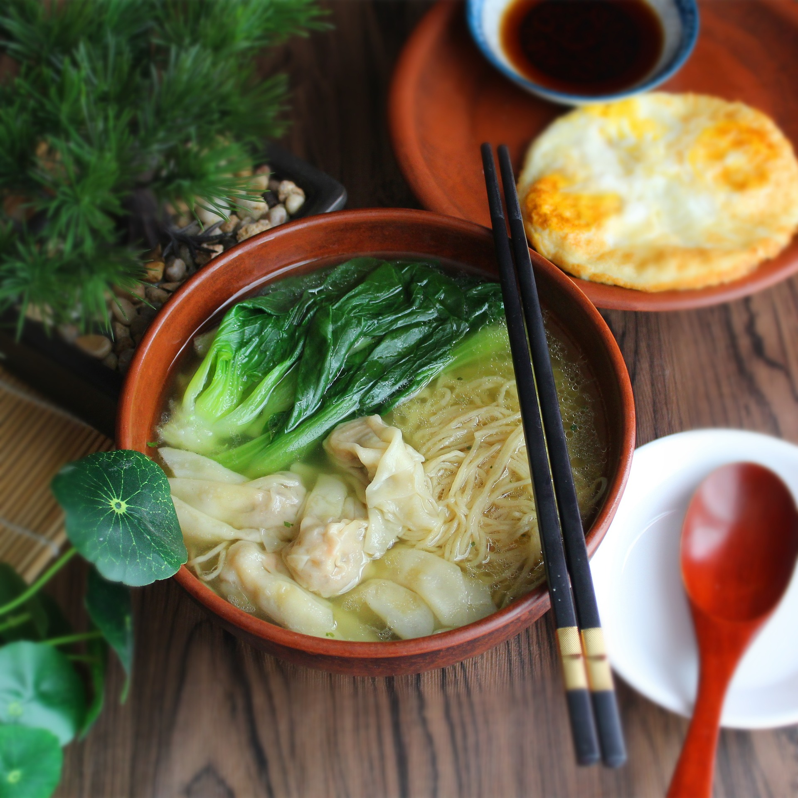

Wonton Noodle Soup

Description
Wonton noodle soup is a cherished and comforting dish that embodies the
heartwarming essence of Chinese cuisine. This beloved culinary creation
presents a bowl of rich, savory broth that has been meticulously simmered
to perfection, infused with the flavors of carefully selected ingredients.
Floating within the aromatic broth are delicate parcels of wontons, each
one filled with a delectable mixture of minced meat, typically pork or
shrimp, and seasonings. These tender dumplings offer a burst of savory
goodness as they harmonize with the broth. The dish is completed with a bed
of thin egg noodles that soak up the flavors of the broth, adding a
satisfying texture and dimension to every spoonful. With the option to
customize through various condiments and toppings like green onions,
cilantro, and sometimes a dash of sesame oil, wonton noodle soup becomes a
deeply personal and satisfying experience, embodying both tradition and
taste in every mouthful.
Ingredients
- 8 oz ground pork
- ¾ teaspoon salt
- ¾ teaspoon sugar
- ½ teaspoon sesame oil
- ⅛ teaspoon white pepper
- 1 tablespoon shaoxing wine
- 2 teaspoons oil
- 1 tablespoon water
- ½ teaspoon cornstarch
- 6 oz shrimp
- ½ pack wonton wrappers
- 12 oz wonton egg noodles
- 8 cups high quality, low sodium chicken broth
Steps
- Start by making the filling. Add the pork, ¾ teaspoon salt, sugar,
sesame oil, white pepper, wine, oil, water, and cornstarch to a bowl
and whip everything together by hand for 15 minutes, or in a food
processor for 5 minutes. You want the pork to look like a paste. Mix in
the chopped shrimp.
- To make the wontons, take a wrapper, and add only about a teaspoon of
filling. Use your finger to coat the edges with water (this helps the
two sides seal together), and fold in half so you have a triangle
shape. Bring together the two outer corners, and press to seal.
Continue assembling until you've used up the filling (this recipe
should make about 3 dozen wontons).
- To assemble the dish, heat up the chicken broth in a medium pot.
Adjust seasoning by adding salt, to taste.
- Bring a large pot of water to a boil and boil the noodles just until
al dente. Divide among 6 bowls. Add the wontons and boil for about 4-5
minutes until they float and the filling is cooked through. Divide
wontons among the bowls, and cover with hot broth. Serve!
- If you want your soup a little more flavorful, you can also add a
couple drops of sesame oil, chopped scallion, and white pepper over the
top!
Recipe taken from
The Woks Of Life
; description generated by
ChatGPT